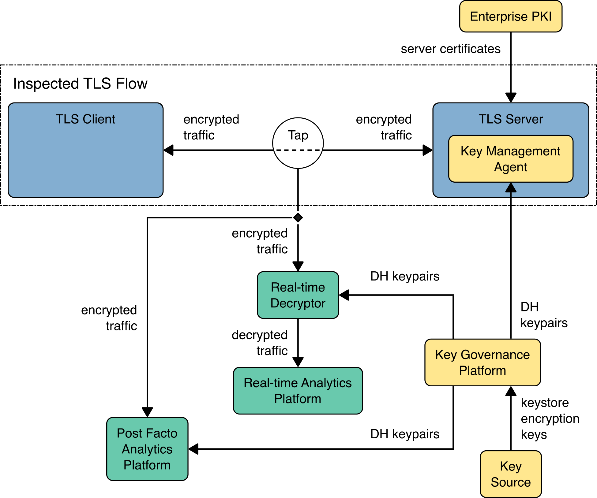
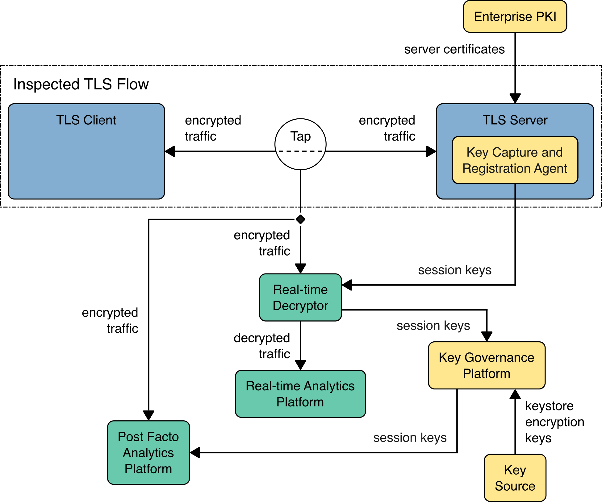

Architecture and Builds#
The project’s technology collaborators have offered products and insights to help organizations gain more visibility into traffic protected by the improved TLS 1.3 protocol. This section identifies the project collaborators, components of the functional architecture employed, and the collaborators’ products we used to implement the functional architecture.
Project Collaborators#
The following organizations have collaborated with the NCCoE to demonstrate how to maintain real-time and post-facto visibility into enterprise network traffic when using TLS 1.3. Real-time visibility allows for threat detection during data exchange, while post-facto visibility enables analysis after the fact, such as forensics analysis, to understand anomalies and respond to or recover from security incidents.
AppViewX#
AppViewX is an automated certificate lifecycle management (CLM) solution that simplifies public key infrastructure (PKI) and certificate management. It combines automation, security, and insights to meet all enterprise PKI and key management needs. AppViewX CERT+ features are purpose-built to address operational and security challenges of certificate and key management to help organizations prevent application outages and security breaches. AppViewX’s capabilities include discovering all certificates across complex enterprise environments, building and maintaining central inventories, provisioning private and public trust certificates from any certificate authority (CA), expiring certificate alerts, and fully automated renewals and revocations.
AppViewX partnered with NETSCOUT to contribute a prototype TLS 1.3 key governance platform that it plans to formalize as an open industry standard. Key governance platform pairs with a Secure Key Orchestration initiative to secure and automate the management of all encryption keys across distributed and hybrid enterprise environments. The AppViewX Cloud-native Identity and Security Platform is used in critical infrastructures to reduce cybersecurity risk and meet security compliance requirements. Thanks to streamlined automation workflows, the AppViewX Platform supports enterprise-wide central certificates and key governance and lifecycle management. The modular AppViewX Platform and its CERT+ and PKI+ products are delivered as a service to address digital and machine identity challenges. AppViewX provisions private and public trust certificates from any CA, alerts to expiring certificates, and automates renewals and revocations. CERT+ is an automated certificate lifecycle management (CLM) solution for simplified PKI and certificate management. PKI+ is a turnkey PKI-as-a-Service for private trust use cases that reduces PKI hardware requirements, simplifies private PKI architectures, and sets up tailored custom CAs. For more details, visit https://www.appviewx.com.
DigiCert#
DigiCert provides scalable TLS and PKI solutions for identity and encryption. The company is known for its expertise in identity and encryption for web servers and Internet of Things devices. DigiCert supports TLS/ Secure Sockets Layer (SSL) and other digital certificates for PKI deployments at any scale through its certificate lifecycle management platform, CertCentral®. The company provides enterprise-grade certificate management platforms, responsive customer support, and advanced security solutions.
DigiCert’s CertCentral web-based platform allows provisioning and managing publicly trusted X.509 certificates for TLS and code signing and a variety of other purposes. After establishing an account, clients can log in, request, renew, and revoke certificates via a browser. Multiple roles can be assigned within an account, and a discovery tool can inventory all certificates within the enterprise. In addition to certificate-specific features, the platform offers baseline enterprise SaaS capabilities, including role-based access control (RBAC), Security Assertion Markup Language (SAML), single sign-on (SSO), and security policy management and enforcement. All account features are fully compatible with the web portal and a publicly available API. Learn more about DigiCert at https://www.digicert.com.
F5#
F5, Inc. is a publicly-held American technology company specializing in application security, multi-cloud management, online fraud prevention, application delivery networking, application availability & performance, network security, and access & authorization. F5 is headquartered in Seattle, Washington, with an additional 75 offices in 43 countries, focusing on account management, global services support, product development, manufacturing, and software engineering. F5 offers application delivery controller technology, application layer automation, multi-cloud, and security services. The company offers modules on its proprietary operating system, TMOS (Traffic Management Operating System), including Local Traffic Manager, Advanced Web Application Firewall, Domain Name Service, and Access Policy Manager. The modules offer the ability to deploy load balancing, Layer 7 application firewalls, SSO (for Active Directory [AD]), Azure AD, Lightweight Directory Access Protocol (LDAP), and enterprise-level virtual private networks. F5’s BIG-IP is available as a hardware product and a virtual machine (BIG-IP Virtual Edition) that is cloud-agnostic and can be deployed on-premises in a public and/or hybrid cloud environment.
F5 has contributed the BIG-IP SSL Orchestrator to the TLS 1.3 visibility project, which provides security solutions with enhanced visibility into encrypted traffic through dynamic service chaining and policy-based traffic steering. Purpose-built for TLS decryption, the SSL Orchestrator applies context-based intelligence to direct encrypted traffic across the security stack, ensuring optimal tool availability and performance. It centralizes TLS decryption for multiple security tools, simplifies management within complex architectures, and supports next-generation encryption protocols—allowing organizations to efficiently scale and adapt their security infrastructure. The BIG-IP SSL Orchestrator inspects encrypted traffic by decrypting, routing it through security controls, and re-encrypting it. This enables the discovery of hidden threats and multi-stage attack prevention. Designed to integrate flexibly with existing architectures, the SSL Orchestrator supports security stack orchestration—providing flexible deployment options that allow enterprises to optimize visibility and defend against evolving threats across their network. Learn more about F5 at https://www.f5.com/.
JPMorgan Chase & Co.#
JPMorgan Chase & Co. is an American multinational financial services firm headquartered in New York City and incorporated in Delaware. It is the largest bank in the United States and the world’s largest bank by market capitalization. JPMorgan Chase manages large-scale network operations with many customers and partners. The network traffic is TLS-protected. Security and reliability considerations require continuous monitoring and analytics to support threat and incident detection, auditing, and forensics. The analytics processes require real-time and post-facto visibility into traffic metadata and contents. As such, JPMorgan Chase is providing content, protocol, and performance requirements and constraints information that supports the project’s functional objectives. Learn more about JPMorgan Chase at https://www.jpmorganchase.com/.
Mira Security#
Mira Security delivers standalone TLS visibility solutions, allowing existing, unmodified enterprise security tools to detect and block threats hidden inside encrypted traffic flows. Mira Security’s technology is embedded in solutions from many companies, as well as being available directly from Mira. Their Encrypted Traffic Orchestrator (ETO) software supports all the latest TLS standards—providing visibility into encrypted traffic without weakening the security profile of the connection. ETO software can be deployed as a physical or virtual appliance or in public cloud environments, delivering consistent features and functionality across deployments.
The ETO offers a transparent TLS visibility solution that decrypts traffic for security tools, enabling threat detection in encrypted flows. ETO integrates seamlessly at the network layer without requiring changes to network architecture and provides fine-grained policy controls for compliance with privacy and security standards. Physical ETO appliances support interface speeds from 1 Gbps to 40 Gbps, with decryption capacity up to 100 Gbps; virtual ETO (vETO) supports decryption up to 5 Gbps on KVM and ESXi, with similar capability in AWS. The optional Category Database service enhances ETO’s policy controls by enabling category-based rules, such as excluding decryption of “health care” traffic. ETO can be managed via WebUI or REST API, integrating with existing frameworks. For large deployments, the Mira Central Management System (CMS) centralizes policy management, licensing, and configuration across multiple devices. Learn more at https://mirasecurity.com.
NETSCOUT#
NETSCOUT Systems, Inc. (NETSCOUT) protects digital business services against disruptions in availability, performance, and security. NETSCOUT combines its patented smart data technology with smart analytics and provides real-time, pervasive visibility and insights to accelerate and secure customers’ digital transformation. NETSCOUT’s approach aims to transform the way organizations plan, deliver, integrate, test, and deploy services and applications. Its nGenius service assurance solutions provide real-time, contextual analysis of service, network, and application performance. The mission of NETSCOUT is to protect the global industry from the risks of disruption, allowing solutions to network performance and security problems. In support of its mission, NETSCOUT provides software solutions that support service assurance, advanced cyber threat and distributed denial of service (DDoS) protection, and business analytics/big data areas of its customers’ business.
NETSCOUT’s Visibility Without Borders Platform contributes to the TLS 1.3 visibility project with its nGeniusONE Service Assurance platform, vSTREAM™ virtual appliance, Omnis Cyber Intelligence console, and CyberStream network security sensors. The nGeniusONE platform offers comprehensive performance monitoring and troubleshooting for IP-based services, integrating real-time monitoring, historical analysis, and multi-layered analytics for holistic service management. The vSTREAM™ virtual appliance extends Adaptive Session Intelligence™ (ASI)-based visibility to virtual and cloud environments, supporting traffic monitoring within hosts or as an aggregation point across multiple hosts. Seamlessly integrated with nGeniusONE, nGeniusPULSE, and NETSCOUT Smart Edge Monitoring, it supports consistent service-critical visibility across infrastructures.
Omnis Cyber Intelligence acts as the central console for the Omnis Security platform, analyzing data from CyberStreams, ISNGs, and vSTREAMs to detect cyber threats, enriched by ATLAS and third-party intelligence feeds. Alerts and data can be exported to third-party SIEMs and data lakes for extended analysis. Omnis CyberStream uses threat detection and machine learning to detect known and zero-day threats. Its Network Detection and Response (NDR) platform integrates with SIEM/SOAR and XDR systems, providing a unified interface for efficient security management and rapid response. CyberStream sensors deploy in any environment, converting packet data into detailed Layer 2-7 metadata for comprehensive network visibility and threat detection. Learn more about NETSCOUT at https://www.netscout.com/.
Not for Radio#
Since 2013, Not for Radio (NFR) has provided solutions to complex challenges in communication networks for both corporate and government customers, with deployments in internet and telecommunication infrastructure as well as high-performance computing fabrics. NFR’s contribution to the project is its Encryption Visibility ArchitectureTM (EVATM) product, which offers a flexible software solution for maintaining data visibility in enterprise networks following the deployment of TLS 1.3 while supporting additional protocols such as legacy TLS and IPsec.
EVA is designed to be minimally intrusive with respect to the diversity of existing security postures, compliance regimes, performance requirements, and orchestration technologies typically found in service operator environments. The demonstration systems constructed for this project employ NFR’s Encryption Visibility AgentTM (EVATM) in its Bounded Lifetime Key Control mode, with an external key management system configured as the source of the bounded-lifetime key material. With this configuration, the Agent runs within the applications of interest and enforces the use of the controlled, bounded-lifetime Diffie-Hellman key material in TLS 1.3 sessions. Importantly, the Agent’s operation does not introduce new pathways for the lateral movement of malware by requiring the relaxation of any platform security mechanisms. Other modes of operation of the EVA, such as high-performance and fully deterministic reporting of per-session key material, as well as distributed bounded-lifetime key generation, are not used in this demonstration. Additional components of the Encryption Visibility ArchitectureTM family, designed to address scalability and integration challenges within larger deployments, are likewise not used.
Thales Trusted Cyber Technologies#
Thales Trusted Cyber Technologies is a U.S. provider of cybersecurity solutions dedicated to the U.S. Government. It protects data from the core to the cloud to the edge with a unified approach to data protection. Thales’ solutions reduce the risks associated with critical attack vectors and address stringent encryption, key management, and access control requirements. In addition to the core solutions developed and manufactured in the U.S. specifically for the Federal Government, Thales sells and supports third-party, commercial-off-the-shelf solutions. To mitigate the risks associated with procuring data security solutions developed outside of the U.S, Thales operates under a Proxy Agreement with the Defense Counterintelligence and Security Agency (DCSA) for Foreign Ownership, Control, or Influence (FOCI) and Committee on Foreign Investments in the United States (CFIUS) National Security Agreement.
For this project, Thales contributed its hardware security module (HSM), a dedicated cryptographic processor that is specifically designed for the protection of the crypto key lifecycle. The HSM acts as a trust anchor that protects the cryptographic infrastructures by securely managing, processing, and storing cryptographic keys inside a hardened, tamper-resistant device. Thales HSMs always store cryptographic keys in hardware. They provide a secure crypto foundation, as the keys never leave the intrusion-resistant, tamper-evident, FIPS 140-validated appliance. Since all cryptographic operations occur within the HSM, strong access controls prevent unauthorized users from accessing sensitive cryptographic material. Thales also implements operations that make the deployment of secure HSMs as easy as possible. They are integrated with the Thales Crypto Command Center for quick and easy crypto resource partitioning, reporting, and monitoring. Learn more about Thales Trusted Cyber Technologies at https://www.thalestct.com/.
Architecture and Builds#
Some aspects of the analytics functions requiring enterprise visibility into its encrypted TLS 1.3 traffic may consider combining network architecture and key-management techniques to achieve operational visibility. These functions may include:
identifying the causes of network performance degradation or failures
key management-based communications failures
detection and identification of anomalous received data
identification of sources of anomalous data
detection of encrypted traffic from unauthorized sources
extraction of enterprise data to anomalous destinations.
This project aims to develop and test an architecture that provides visibility within an enterprise data center. This is achieved using tools that intercept and decrypt traffic without altering the traffic flow between the TLS clients and servers, without changing the TLS 1.3 protocol. In this demonstration project, we examine TLS 1.3 deployment within the enterprise data center and address mechanisms that can support access to historical data by leveraging key management-based and middlebox solutions.
This NIST Cybersecurity Practice Guide addresses the challenge of maintaining visibility into network traffic encrypted with TLS 1.3 within enterprise data centers. It focuses on securely managing servers’ cryptographic keys, recorded traffic, and privacy expectations. Our builds demonstrate real-time decryption, analysis, or post-facto decryption and TLS 1.3 encrypted traffic described by one of the following:
Bounded-lifetime DH keys on the TLS server
Export of TLS session keys from the TLS server
Break and inspection of TLS traffic using a middlebox
Open Systems Interconnection (OSI) Data Link Layer 2 cryptography
OSI Network Layer 3 cryptography
System Architecture Functions#
Below are the components that comprise the TLS 1.3 visibility architecture.
Server Components: Handle services like HTTPS and email, manage network resources, generate session keys, negotiate encryption protocols, and integrate with key management infrastructure.
Client Components: Initiate encrypted traffic for users, devices, and processes that interact with servers to request certificates and keys. They are typically located outside of data centers.
Network Tap Function: Copies network traffic for logging and monitoring, aiding in the detection of malicious activity or security threats.
Break and Inspect Middlebox: Decrypts, inspects, and re-encrypts traffic to identify threats before the data is transmitted into or out of the network.
Real-Time Decryption: Decrypts and forwards traffic with minimal delay to support real-time security needs.
Real-Time Analytics: Processes data quickly for immediate threat detection and response, providing insights on network performance and potential anomalies.
Post-Facto Decryption and Analytics: Decrypts and stores encrypted data for later analysis, such as forensic investigations, ensuring secure handling and disposal of data.
Key Management Agent: Provides a secure interface for provisioning TLS server keys and implementing policies for key activation and expiration.
Key Capture and Registration Agent: Captures the session keys at the time they are generated and registers the session keys with the Key Governance Platform.
Enterprise PKI: Manages digital certificates and validates identities, binding them to cryptographic keys for secure communication.
Key Governance: Oversees the lifecycle of certificates and keys, including issuance, renewal, revocation, and secure storage.
Key Source: A secure, FIPS 140-validated component that generates cryptographic keys for use within the TLS 1.3 project.
High-Level Passive Inspection Architecture Overview#
The figures below depict the functional components of a passive decrypt and inspect demonstration architecture. The figure below depicts passive inspection using rotated bounded-lifetime DH keys on the destination TLS server. This approach can be used to capture decrypted traffic for real-time analysis, incoming traffic for post-facto or historical analysis, or both. Note that the clients internal to the enterprise receiving TLS 1.3-protected traffic from the TLS server are not depicted.
{kind=link}

Passive Inspection Functional Architecture - Bounded-Lifetime DH#
The figure below depicts passive decryption and inspection using exported session keys. The architecture permits real-time analysis of decrypted TLS traffic and post-facto analysis of stored encrypted traffic. Note: Exported session keys can be used to decrypt TLS traffic irrespective of the session’s TLS version and cipher suite. In addition to exporting the session keys, the Key Management Agent also exports the Client Random from the TLS handshake to allow real-time and post-facto decryption devices to match session keys to network flows.
{kind=link}

Passive Inspection - Exported Session Key Functional Architecture#
The function of each component used for passive inspection is described as follows:
TLS Client Devices: Devices that initiate encrypted traffic.
Network Tap: Component that provides a copy of traffic from a network segment.
Real-Time Decryption: Passive decryption component that decrypts and forwards the copied traffic.
Real-Time Analytics Platform: Set of tools for examining decrypted payloads to identify undesired characteristics.
Traffic Capture Platform: Encrypted storage of captured traffic to allow subsequent analytics of captured traffic. This can be encrypted storage of captured decrypted traffic or storage of the captured original encrypted traffic.
Key Governance Platform: Security module performing storage and distribution of keys (e.g., discover, create, renew, provision, revoke, and destroy certificates and keys). Bounded-lifetime DH keys are pushed to the TLS server and passive decryption device to provide real-time decryption. They are also stored for future use by decryption solutions that work with captured encrypted sessions. Exported session keys and flow identification data are obtained from the Session Key Capture agent or the decryption platform. These keys enable real-time decryption and are stored for future use by decryption solutions that handle captured encrypted sessions.
TLS Server: Counterparty for encrypted traffic that generates session keys, negotiates encryption protocols, and connects to key management infrastructure.
Bounded-Lifetime DH Key Management Agent: Receives the bounded-lifetime keys from the key governance platform and enables their use by the TLS server according to key governance platform policy.
Key Capture and Registration Agent: Captures the session keys at the time they are generated and registers the session keys with the Key Governance Platform and the passive real-time decryptor.
Enterprise Public Key Infrastructure: CA that provides enterprise public key certificates.
Note: Information transfers within an enterprise and any information stored on/by the analytics platform require cryptographic protection or compensating physical controls.
High-Level Middlebox Architecture Overview#
To achieve necessary visibility into encrypted TLS 1.3 traffic, some enterprise analytics functions may require a middlebox architecture that integrates network and key-management techniques. These functions may include identifying network performance issues, managing key-based communication failures, and detecting anomalous data sources or unauthorized encrypted traffic. The project scope includes a demonstration of middleboxes within the data center that “break and inspect” traffic for real-time analysis, commonly deployed at the enterprise edge. The figure below illustrates the components of the Break and Inspect (B&I) architecture used in this demonstration.

Middlebox (Break and Inspect) Functional Architecture#
Below are descriptions of the B&I middlebox components:
TLS Client Devices: These devices initiate encrypted traffic and may reside outside the data center. However, B&I is not using bounded-lifetime DH or ephemeral key reporting to gain visibility. As such, the TLS 1.3 sessions from both an external client to the B&I device and from the B&I device to the server have forward secrecy.
Break and Inspect Component: Component that terminates, decrypts, and re-encrypts/reinitiates TLS traffic.
Real-Time Analytics Platform: Set of tools that examine unencrypted payloads to identify undesired characteristics.
Traffic Capture Platform: Encrypted storage of captured decrypted traffic or storage of the captured original encrypted traffic that enables subsequent analytics of captured traffic.
Key Governance Platform: Security module performing storage and distribution of ephemeral session keys and associated flow identification data provided by the B&I device for later use by a passive decryption device working on captured encrypted traffic.
TLS Server: Counterparty for encrypted traffic that generates session keys, negotiates encryption protocols, and connects to the enterprise PKI infrastructure.
Enterprise PKI: CA that provides enterprise key certificates.
Note: Information transfers within the enterprise and any information stored on or by the analytics platform require cryptographic protection or compensating physical controls. Also, in the example above, the B&I device feeds analytics tools with a copy of the decrypted TLS traffic (i.e., the analytic tool is passive and consumes the feed). B&I devices are capable of feeding the decrypted TLS traffic to inline security tools, which may modify the decrypted traffic before returning it to the B&I device for re-encryption and forwarding it to the final destination. In the use case above, with passive analytic tools, the end-to-end payload between client and server is unmodified, whereas the use of inline tools may result in modification.